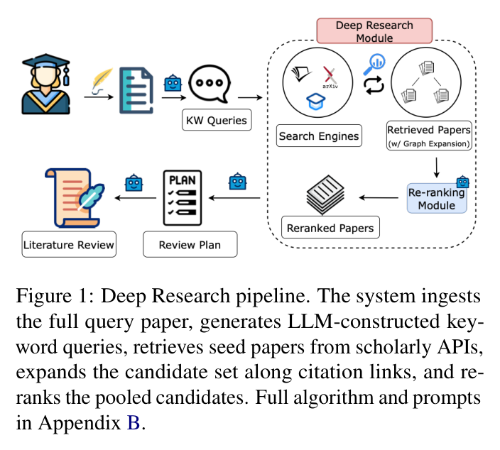
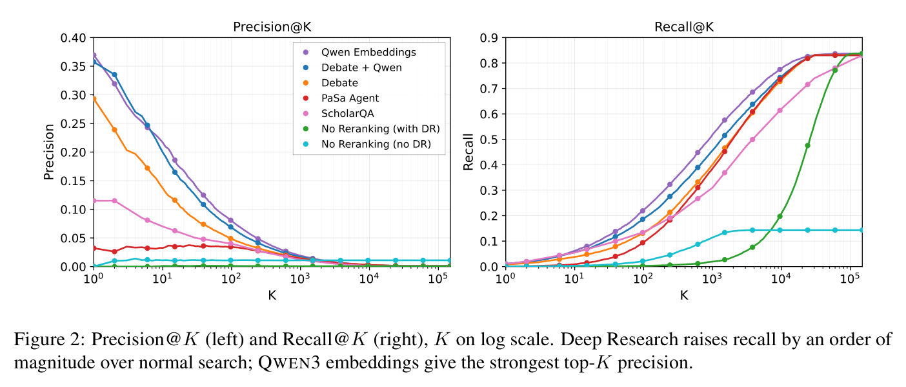
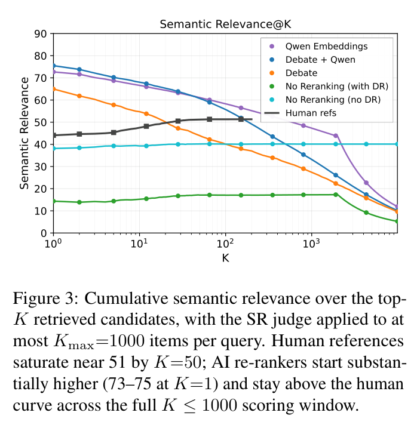

Deep Research pipeline
吃进整篇查询论文（不是一句 query），生成 LLM 构造的关键词，再沿检索结果的参考文献广度优先扩展。效果：RollingEval-Jun25 上的召回从 <20% 提到 >80%。
"人类的参考文献列表不是金标" —— 一篇直接攻击整条评测范式的论文，比 ScholarQuest 早一个月。
为什么必须归档：PaSa / LitSearch / ResearchArena / ScholarQuest 这一整条线的金标都建立在"论文的参考文献列表 = 该找到的论文集合"这个假设上。这篇论文用中立 LLM 判官量化了这个假设的失效程度：人类引用里只有 51% 被判为中度以上相关，而最强 AI reranker 是 86–88%。
如果 AutoSci 的评测里有"用参考文献列表当检索金标"的设计，这是审稿人会拿来打你的那篇论文。提前知道。
吃进整篇查询论文（不是一句 query），生成 LLM 构造的关键词，再沿检索结果的参考文献广度优先扩展。效果：RollingEval-Jun25 上的召回从 <20% 提到 >80%。
用中立 LLM-as-judge 判断人类参考文献是否真的相关：仅 51% 达到中度相关以上；最强 AI reranker 是 86–88%。在 OpenAlex 合著图上进一步发现：人类引用直接合作者的概率比最佳 AI reranker 高 2.5 倍。

[Expand]、SPAR 的 RefChain 同族，但输入粒度是整篇论文。

它主打"自动化答案集 → 规模更大"。但如果单轴 recall-vs-参考列表本身有系统偏置，把有偏的金标做大并不等于做好。ScholarQuest 全文未引这篇。
本地 复杂/PaSa/深读评价.md 已指出其 GT 来自顶会引文、恰是 [Expand] 的优势区。这篇给出了该偏置的独立量化。
AstaBench 不用参考列表当金标，改用LLM 生成的加权相关性标准 + 强制提交证据片段。在这篇的论证下，那是更稳的方向 —— 尽管它自己也有循环性问题。
不要过度推论。它的判官本身也是 LLM，"AI reranker 比人类更相关"这个结论有同源偏好的风险（判官与 reranker 都是语义模型，天然偏好语义匹配紧密的文档；而人类引用包含致谢式引用、背景引用、方法出处等非语义相关动机）。这不否定它的核心警示，但"51% vs 86–88%"不能直接读成"AI 比人做得好"。
深读程度说明。本页为归档级：摘要、主图表与核心数字经本地 PDF 核对，未做逐页全文通读。若要正式引用其结论（尤其 51% / 86–88% / 2.5× 三个数字），建议先核对论文 §3–§4 的判官设定与相关性档位定义。
归档日期：2026-08-03 · 论文版本 v1（2026-05-28）· 图片由本地 PDF 按图注区域裁切。